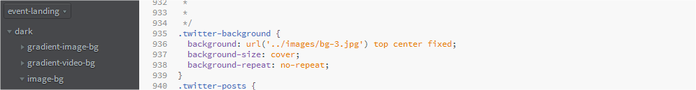

Thank you for purchasing our theme.If you have any questions that are beyond the scope of this help file, please submit a ticket on support.deviserweb.com. Thanks so much!
All the directories and files are well organized as it shown on the image bellow. Same file tree has been leaveraged for dark version.
This template is a mobile friendly (responsive) layout which is designed based on Twitter boosstrap 3.2. See our HTML file structure which is in index.html. Your contents goes inside container.
<!-- =========================
HEADER AREA : INTRO PAGE
============================== -->
<header class="header-background header" id="header"> <!--Start: "Header Area"-->
<div class="fix header-overlay overlay-color">
</div> <!-- End: fix header-overlay overlay-color -->
</header> <!--End: Header Area-->
<section class=" about-our-event" id="section-1"><!-- Start: about-our-event, "SECTION-1" -->
<div class="container">
<!-- Start: About Our Event Area -->
<div class="row about-our-event-body">
</div> <!-- about-background-image -->
</div> <!-- End: container -->
</section> <!-- End: about-our-event, "SECTION-1" -->
<section class="our-featured-speaker" id="section-2"><!-- Start: our-featured-speaker, "SECTION-2" -->
<div class="container">
<div class="row our-featured-speaker-body">
</div><!-- Start: our-featured-speaker-body -->
</div><!-- End: container -->
</section> <!-- End: our-featured-speaker, "SECTION-2" -->
<section class="scedule-background scedule" id="section-3"> <!-- Start: our-featured-speaker, "SECTION-3" -->
<div class="fix overlay-color"> <!-- Start: Overlay color -->
<div class="container">
<div class="row scedule-body">
</div><!-- End: our-futured-speaker-body -->
</div> <!-- End: container -->
</div> <!-- End: Overlay color -->
</section> <!-- End: our-featured-speaker, "SECTION-3" -->
<section class="speakers" id="section-4" ><!-- Start: Speakers Area, "SECTION-4" -->
<div class="container">
<div class="row speakers-body col-md-12 col-lg-offset-1 col-lg-10" >
</div><!-- Start: Speakers Body Area -->
</div><!-- End: "container"-->
</section><!-- End: Speakers Area, "SECTION-4" -->
<section class="pricing-tables" id="section-5"> <!-- Start: Pricing Table Area, "SECTION-5" -->
<div class="container">
<div class="row pricing-tables-body">
</div><!-- End: .pricing-table-body -->
</div> <!-- End: .container -->
</section> <!-- End: .Pricing .Table Area, "#SECTION-5" -->
<section class="register-background register" id="section-6"> <!-- Start: Register Area, "#SECTION-6" -->
<div class="overlay-color">
<div class="container">
<div class="row register-body">
</div><!-- End: .register-body -->
</div><!-- End: .container -->
</div> <!-- End: .overlay-color -->
</section> <!-- End: Register Area, "#SECTION-6" -->
<section class="sponsore" id="section-7" ><!-- Start: Sponsore Area, "#SECTION-7" -->
<div class="container">
<div class="row sponsore-body"><!-- Start: Sponsore Body Area -->
</div><!-- Start: Sponsore Body Area -->
</div><!-- End: .container -->
</section><!-- End: Sponsore Area, "#SECTION-7" -->
<section class="collapse-area" id="section-8"> <!-- Start: Collapse Area, "#SECTION-8" -->
<div class="container">
<div class="row">
</div> <!-- End: .row -->
</div> <!-- End: .container -->
</section> <!-- End: Collapse Area, "#SECTION-8" -->
<section class="scedule testimonial" id="section-9"> <!-- End: Testimonial Area, "#SECTION-9" -->
<div class="container">
<div class="testimonial-body scedule-body ">
</div> <!-- End: .testimonial-body .scedule-body -->
</div> <!-- End: .container -->
</section> <!-- End: Testimonial Area, "#SECTION-9" -->
<section class="twitter-background twitter-posts" id="section-10"> <!-- End: Twitter Posts Area, "#SECTION-10" -->
<div class="fix overlay-color">
<div class="container">
</div> <!-- End: .contaimer -->
</div> <!-- End: .overlay-color -->
</section> <!-- End: Twitter Posts Area, "#SECTION-10" -->
<section class="contact-us" id="section-11"> <!-- Start: Contact Us Area, "#SECTION-11" -->
<div class="container">
<div class="row contact-us-body">
</div> <!-- End: .row .contact-us-body -->
</div> <!-- End: .container -->
</section> <!-- End: Contact Us Area, "#SECTION-11" -->
<footer class="footer"> <!-- Start: Footer Area -->
<div class="container">
<div class="row footer-body btn-scroll">
</div><!-- End: .row .footer-body .btn-scroll -->
</div> <!-- End: .container -->
</footer> <!-- End: Footer Area -->
We are using plantey of CSS files across template and comments in capital letter describe the linked stylesheet bellow. We separated styles for improving convenience to edit this template. If you're going to use this template in production I'd recommend you to merge all stylesheets in one file (for decreasing http queries).
<!-- ========================= STYLESHEETS ============================== --> <!-- GOOGLE FONTS --> <link href='http://fonts.googleapis.com/css?family=Oswald:400,300,700' rel='stylesheet' type='text/css'> <link href='http://fonts.googleapis.com/css?family=Open+Sans:400,300,700,800' rel='stylesheet' type='text/css'> <!-- BOOTSTRAP CSS --> <link rel="stylesheet" href="bootstrap/css/bootstrap.min.css"> <!-- FONT ICONS --> <link rel="stylesheet" href="css/font-awesome.css"> <!-- PRELOADER --> <link rel="stylesheet" href="css/preloader.css"> <!-- CAROUSEL SLIDERS --> <link rel="stylesheet" href="css/owl.carousel.css"> <link rel="stylesheet" href="css/owl.theme.css"> <link rel="stylesheet" href="css/owl.transitions.css"> <!-- CSS3 ANIMATE CSS --> <link rel="stylesheet" href="css/animate.css"> <!-- DROPDOWN CSS --> <link rel="stylesheet" href="css/fancySelect.css" /> <!-- IMAGE HOVER EFFECT --> <link rel="stylesheet" href="css/hover-effect-animate.css" /> <link rel="stylesheet" href="css/hover-effect.css" /> <!-- COUSTOM CSS link --> <link rel="stylesheet" href="css/style.css"> <link rel="stylesheet" href="css/responsive.css"> <!-- COLORS --> <link rel="stylesheet" href="css/colors/red.css"> <!-- <link rel="stylesheet" href="css/colors/purple.css"> --> <!-- <link rel="stylesheet" href="css/colors/lime.css"> --> <!-- <link rel="stylesheet" href="css/colors/blue.css"> --> <!--[if lt IE 9]> <script src="https://oss.maxcdn.com/libs/html5shiv/3.7.0/html5shiv.js"></script> <script src="https://oss.maxcdn.com/libs/respond.js/1.4.2/respond.min.js"></script> <![endif]-->
<!-- SCRIPTS -->
<script src="js/jquery-1.11.3.min.js"></script>
<script src="bootstrap/js/bootstrap.min.js"></script>
<script src="js/jquery.stellar.min.js"></script>
<script src="js/jquery.scrollTo.min.js"></script>
<script src="js/jquery.localScroll.min.js"></script>
<script src="js/owl.carousel.min.js"></script>
<script src="js/jquery.nav.js"></script>
<script src="js/wow.min.js"></script>
<script src="js/jquery.nicescroll.min.js"></script>
<script src="js/matchMedia.js"></script>
<script src="js/navbar.matchMedia.js"></script>
<script src="js/jquery.ajaxchimp.min.js"></script>
<script src="js/jquery.countdown.js"></script>
<script src="js/fancySelect.js"></script>
<script src="js/smoothscroll.js"></script>
<script src="js/jquery.backgroundvideo.js"></script>>
<script src="js/navbar-custom.js"></script>
<script src="js/custom-scripts.js"></script>
jsfolder of home directory. Let's see what each file for:jquery.1.11.3.min.js is stayable version of jQuery which is required to place upon all scripts otherwise none of jquery code will work.bootstrap.min.js is a plugin comes with Twitter Bootstrap dist.jquery.stellar.min.js helps our template act like parallax scroll. The plugin is created by Mark Dalgleishjquery.scrollTo.min.js is plugin by Ariel Flesler. Used for scrolling to targeted id from the navigation bar and home screen buttons of our template.jquery.localScroll.min.js is plugin by Ariel Flesler. Used for scrolling to targeted id from the navigation bar and home screen buttons of our template.owl.carousel.min.js is a popular jQuery plugin which is used for building touch enabled slider.jquery.nav.js jQuery One Page Navigation Pluginwow.min.js WOW, a jQuery plugin which initiates animation effect on scroll.jquery.nicescroll.min.js is used in this template to beautify scrollbar and smooth scroll. Found in areaaperta.commatchMedia.js Test a CSS media type/query in JS. Contributors: Scott Jehl, Paul Irish, Nicholas Zakas, David Knightnavbar.matchMedia.js Custom script after matchMedia.jsjquery.ajaxchimp.min.js is a jQuery plugin which is used to send information to MailChimp list directly using our form in subscription section. ajaxChimp on GitHub.div or span to show a countdown to a given time.fancySelect.js A non-obtrusive image dropdown menu extends and replaces a standard HTML select controlsmoothscroll.js is a plugin for smoothly scrolling effect. It is currently closed with typical HTML comment to not to take effect on document because another plugin handle the same effect.jquery.backgroundvideo.js We have used it with a little customization so that background video does not have any audio by default, but end users can enable sound easily.navbar-custom.js This file must go all the navbar related script files and plugins. This file contains custom codes.custom-scripts.js This file must go all the way down to other files and plugins. This file contains custom codes.We have used only one font throughout the template
Oswald All of the fonts are available on google fonts. You can choose other fonts from google directory. We have linked them at head part in index.html.
<!-- GOOGLE FONTS --> <link href="https://www.google.com/fonts/specimen/Oswald" rel="stylesheet"> <link href="https://www.google.com/fonts/specimen/Open+Sans" rel="stylesheet">
Check <head> part of your index.html page. You will find all colors link available. Red red.css color is activated by default. But if you want to use another color just simply uncomment that and don't forget to comment in blue.css to inactive it.
<!-- COLORS -->
<!-- THESE COLORS ARE COMMENTED TO DISABLE BY DEFAULT. YOU CAN UNCOMMENT TO USE EACH OF THEM -->
<link rel="stylesheet" href="css/colors/red.css">
<!-- <link rel="stylesheet" href="css/colors/purple.css"> -->
<!-- <link rel="stylesheet" href="css/colors/lime.css"> -->
<!-- <link rel="stylesheet" href="css/colors/blue.css"> -->
Screenshort:
WOWplugin to to trigger animations on scroll. It usedAnimate.cssfor CSS animation. You will find all of the animations in Animate.css website.To learn more aboutWOWplease read their Documentation.
Example:
<div class="section-header wow Desired-Animation-Effect">Your Content Goes Here</div>
Screenshort:
5 Images used in 5 sections. Header, About Our Event, Scedule, Register, Twitter
style.less
Find this 5 sections in style.css all the files are well commented.
Header BG:
About Our Event BG:
Scedule BG:
Register BG:
Twitter BG:

And there is a transparent black color overlay to make content more visible. You will find it on MISCELLANEOUS STYLE section in the same css file.
It's very easy to change the background video.
1. Just go to the video folder:
2. You will find the videos in 3 formats. .mp4 .ogg and .webm . And a JPG image. You can convert your videos in this 3 format very easily via http://video.online-convert.com/ . Convert your video int this 3 format and replace the old videos and JPG screenshots.
NOTE: If your filename is not "video" and has a dfferent name. You can change it on JS in custom-scripts.js file. available on JS folder.
Currently all devices under 640px width will show the background image instead of video. If you want change this please edit js/custom-scripts.js. If you want to use background image instead of video on tablet. use min-width: 768px; also change it on responsive.css (max-width: 1280px)
Same as background image version. 5 Images used in 5 sections. Header, Newsletter Subscription, Feature Area 4, Testimonials and Download section.
It is more easy to change transparent color for the template. Please follow easy steps to change your desired color.
.less file.@main_color veriable..less file with any preprocessor application. It will do all rest of works for you.index.html
If you don't wanna go through the steps above, you simply can duplicate or edit any of .css files among them and simply replace HEX with your color. That's it! So easy right? But we recommend less because Less is More
Same way as you did for transparent background. Just navigate to solid-color/style-1/less and follow the steps described in Background: Transparent Color
We have used Font Awesome 4.1.0, The Elegant Icon Fonts, Linea throughout the template. So there are 1000+ font icons come with it.
You can see icon mapping directly from fontss folder
Just change the price links to your desired screenshots url. That's all.
You can add phone number and email address along with goggle map location
If you need any help please submit a ticket on support.deviserweb.com .We will try our best to respond within 24 hours.
Credits:
Images from unsplash.com
Mockups from pixeden.com
Video converted via video.online-convert.com
Bootstrap: getbootstrap.com
Stellar.js v0.6.2 http://markdalgleish.com/projects/stellar.js http://markdalgleish.mit-license.org
WOW https://github.com/matthieua/WOW
SmoothScroll v0.9.9 https://github.com/cferdinandi/smooth-scroll
ScrollTo http://flesler.blogspot.com
jquery.nicescroll 3.2.0 http://areaaperta.com/nicescroll
jQuery One Page Nav Plugin http://jquery.org/license http://github.com/davist11/jQuery-One-Page-Nav
LocalScroll http://flesler.blogspot.com
jQuery FlexSlider v1.7 http://flex.madebymufffin.com
jQuery Countdown Plugin v1.0 https://github.com/eAdnan007/jquery-countdown
FancySelect https://github.com/octopuscreative/FancySelect